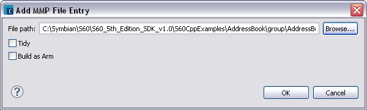

Figure 1 - Add MMP File Entry
| Name | Function |
|---|---|
File path |
Type the path and filename for the MMP file to create or click Browse to set a path. |
Tidy |
Specify the tidy attribute if the release that an .mmp file defines is internal to your component and not required by other components or for your component to execute. |
| Manual | Checkmark to indicate a test that requires manual interaction to complete. |
| Support | Checkmark to not include the test in a batch file. |